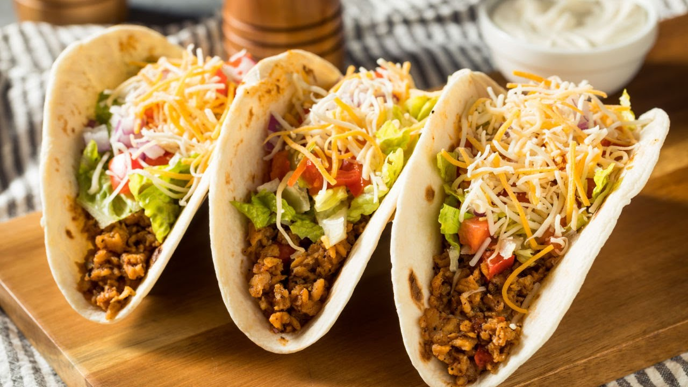

Мексиканские Тако

Ингредиенты
- Кукурузные лепешки - 16 шт
- Фарш говяжий - 500 г
- Лук - 1 шт
- Чеснок - 2 зубчика
- Помидоры - 2 шт
- Авокадо - 1 шт
- Салат - по вкусу
- Сыр - 100 г
- Сметана - по вкусу
- Приправа для тако - 2 ст.л.
Способ приготовления
- Обжарьте лук и чеснок до прозрачности.
- Добавьте фарш и обжаривайте до готовности.
- Приправьте смесью для тако, добавьте немного воды.
- Подогрейте лепешки на сухой сковороде.
- Приготовьте гуакамоле: разомните авокадо с солью и лимонным соком.
- Нарежьте помидоры кубиками.
- Соберите тако: на лепешку выложите фарш, овощи, гуакамоле и сметану.
Советы от шефа
Для хрустящих тако обжарьте лепешки в масле до золотистого цвета. Можно использовать курицу вместо говядины для более легкого варианта.